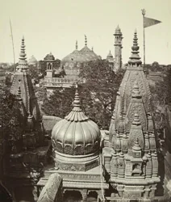
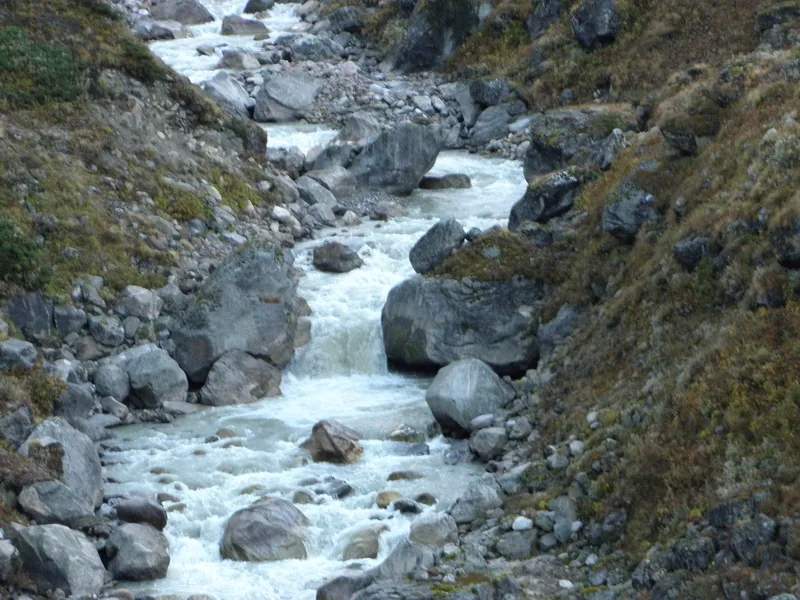
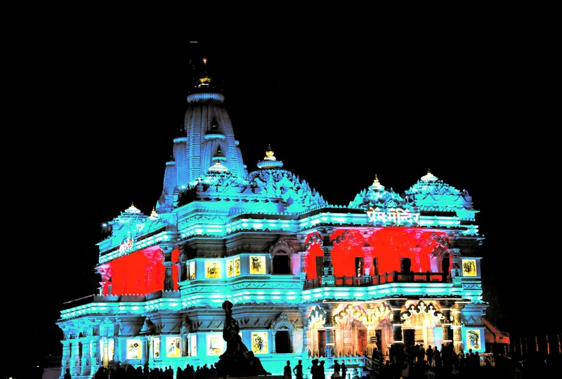
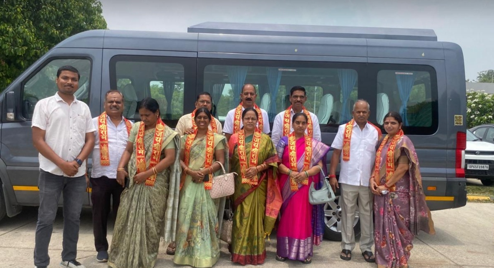
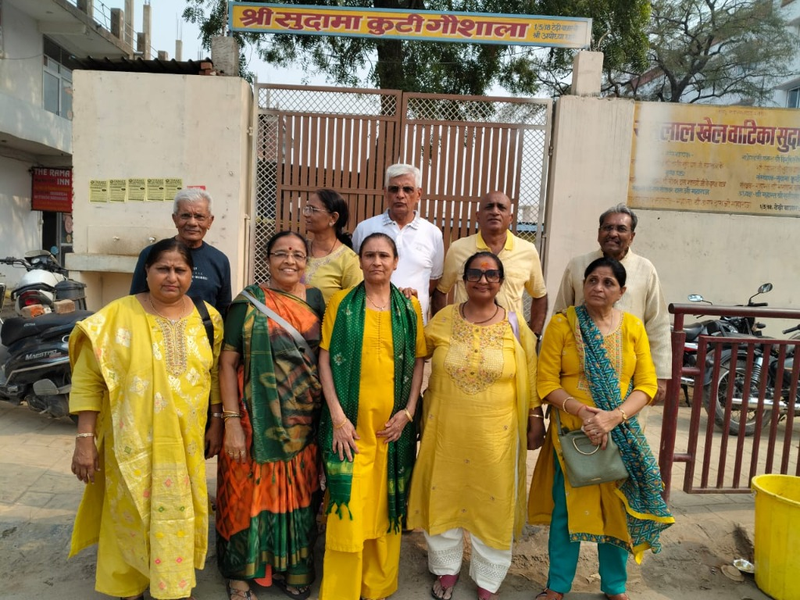
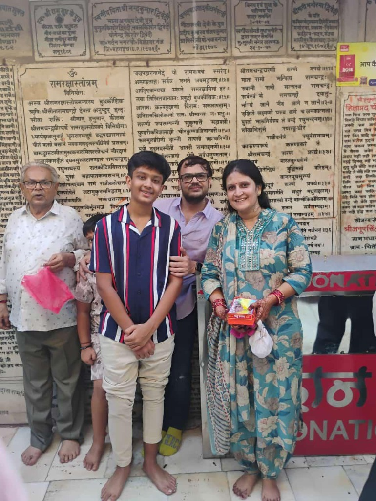
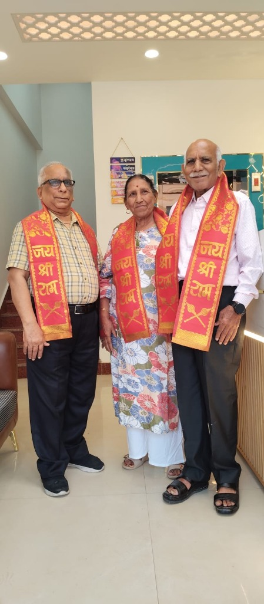

Janmabhoomi
Ayodhya
Shri Ram Janmabhoomi Mandir, Hanuman Garhi, Saryu Aarti & Kanak Bhawan.
Plan visit॥ Complete UP Sacred Circuit: Ayodhya · Kashi · Vrindavan ॥
From Shri Ram's Ayodhya & Kashi Vishwanath in Varanasi to Banke Bihari & Prem Mandir in Vrindavan — we organize custom, VIP-guided family yatras across all sacred destinations of Uttar Pradesh with 24/7 care and private AC cabs.
Complete UP Pilgrimage Circuit
From Ram Janmabhoomi to Kashi Vishwanath & Braj Dham — every yatra is planned with deep reverence, comfort, and unhurried temple darshan.
Shri Ram Janmabhoomi Mandir, Hanuman Garhi, Saryu Aarti & Kanak Bhawan.
Plan visitShri Krishna Janmabhoomi, Banke Bihari VIP entry & Prem Mandir light show.
Plan visitState & City Special Tours
Book all-inclusive packages with direct flight/train ticket coordination, handpicked hotels, AC cab, and VIP entry passes.
What we carry for you
We don't just book tickets and rooms. From the moment you reach out to the day you return home, your yatra runs on a quiet, reliable rhythm — guided, escorted, and looked after with care.
All Services & PackagesKnowledgeable pandit-guides, smooth entry, and unrushed time before the deity.
Hand-picked hotels and clean dharamshalas, close to the temples that matter.
AC cabs & tempo travellers with trusted drivers, door to door across the circuit.
Popular tour packages
All-inclusive, fully-guided and tailored to your dates. Tap any package for details and prices.

VIP Ram Mandir entry · Hanuman Garhi · Saryu Aarti

Kashi Vishwanath · Dashashwamedh · Sarnath · Boat Ride
Ram Janmabhoomi · Hanuman Garhi · Saryu aarti

Ram Janmabhoomi · Triveni Sangam · Stays & AC Cab

Ram Mandir · Kashi Vishwanath · Ganga Aarti
Most lovedRam Mandir · Triveni Sangam · Kashi

Four sacred cities at an unhurried pace
 Signature
SignatureAll eight holy cities of Uttar Pradesh

Krishna Janmabhoomi · Banke Bihari · Prem Mandir
Travel Guides & Yatra Tips
Essential tips, timing slots, and booking guides to plan your perfect spiritual yatra.
Planning a luxury cruise ride in Varanasi? Read our guide on Kashi Ganga Cruise online booking, Alaknanda Cruise tickets, and timings.
Read Cruise Guide
Confused about Ram Mandir VIP entry? Read our detailed guide on booking Sugam Darshan/VIP passes and priority queue tips.
Read VIP Pass GuidePlanning a yatra to Mathura Vrindavan? Read our guide on Banke Bihari VIP entry passes, Prem Mandir light show timings, and rules.
Read Braj VIP GuideVoices of devotees

Delhi NCR

Mumbai, MH

Bhopal, MP

Ahmedabad, GJ

Bengaluru, KA

Jaipur, RJ

Kolkata, WB

Patna, Bihar

“Our recent pilgrimage was truly unforgettable. From the moment our journey began, everything was perfectly arranged with great care and professionalism. The taxi service was punctual and extremely comfortable. They organized our visit to Shri Ram Janmabhoomi beautifully with Sugam Darshan Pass. Sightseeing in Ayodhya, Prayagraj, Chitrakoot, and Varanasi was exceptionally well-planned.”
“It was well managed and planned trip. The car provided was good and also Ram mandir Darshan was hassle free with the sugam Darshan pass. The guide we got was really good guy.”
“We stayed for 4 Days & 3 Nights. Ayodhya Dharshan team managed our transportation, sightseeing, and Mandir Darshans perfectly. They even arranged Shringar Aarti Darshan on the morning of our departure. Highly dependable!”
“Three generations of our family at the Sangam together — they arranged the boat, the pandit, and even held my father’s hand on the steps. A morning we will never forget.”
Happy pilgrims
Real families, real darshan. A few of the smiles we've been blessed to be part of.
Ram Mandir · Ayodhya Group yatra · KashiHanuman Garhi · Ayodhya
Group yatra · KashiHanuman Garhi · Ayodhya Banke Bihari · Vrindavan
Banke Bihari · Vrindavan Triveni Sangam · Prayagraj
Triveni Sangam · Prayagraj On the road · Ayodhya
On the road · Ayodhya Braj darshan · Vrindavan
Braj darshan · Vrindavan Family yatra · Ayodhya
Family yatra · AyodhyaQuick answers
Begin your yatra
Share your dates and the cities on your heart. A yatra guide will craft a personal itinerary — no obligation, no rush.
Comprehensive index of spiritual search queries, NRI pilgrimage packages, international travel guides, temple circuits across Ayodhya, Varanasi, Prayagraj, Chitrakoot, Vindhyachal, Mathura, Vrindavan, and Naimisharanya: